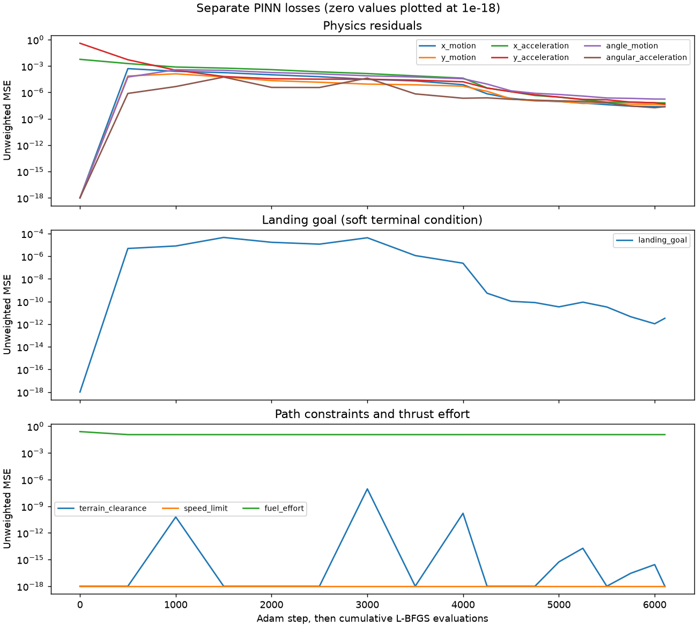
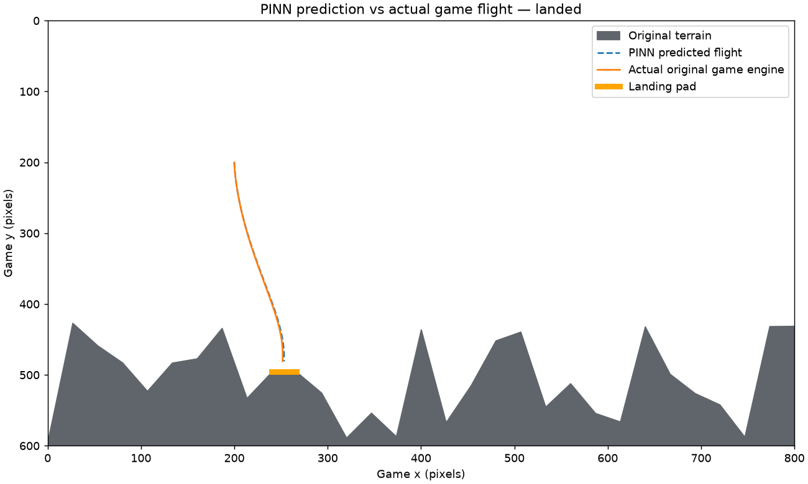

Lunar Lander PINN
A small experiment using a physics-informed neural network to plan a landing on one fixed map.
The network supplies thrust and turn controls. The game handles movement and landing checks.
Training details
Loading training information…
The starting state is fixed in the network output. Physics and landing-goal penalties are separate: physics measures errors in the motion equations, while the goal measures final position, velocity, angle and angular velocity. Clearance, speed and thrust penalties also contribute.
L = 100 L_physics + 1000 L_goal + 100 L_clearance + 100 L_speed + 0.00001 L_thrust


This is an offline plan for one map. It does not adapt to new terrain or disturbances.
Game by cscazorla, used under the MIT license. Open the original game.